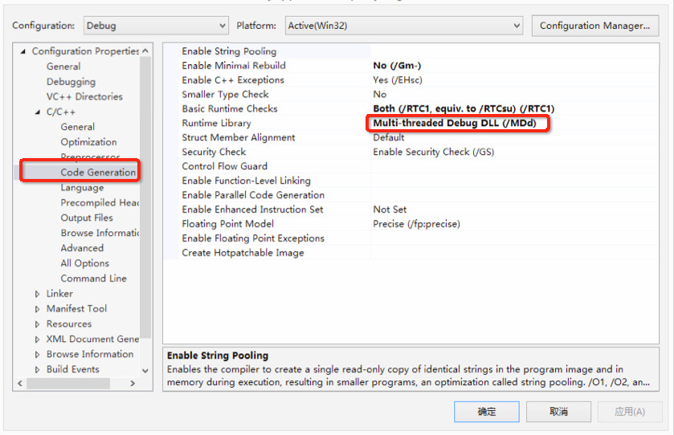

自定义Cocos2d-x预编译库使用说明
简介
本文档介绍如何定制Cocos2d-x预编译库，并在游戏工程中使用定制后的Cocos预编译库。
定制Cocos2d-x预编译库是指安装Cocos之后，对其中的所包含的Cocos2d-x引擎源码进行修改与定制，然后使用的过程。
版本要求
以下的内容中提到的路径以v3.10版本为例，具体路径以实际安装的Cocos 3.10版本为准。
如何定制预编译库
定制预编译库实际上就是修改安装的源码。在Cocos 3.10安装完成后，可以使用XCode 6.0及其以上的版本 和 Visual Studio 2013版本进行修改和调试：
- Mac系统可以使用XCode打开工程文件
/Applications/Cocos/Cocos2d-x/cocos2d-x-v3.10/build/cocos2d_libs.xcodeproj，然后修改与调试代码即可定制引擎。 - Windows系统可以使用Visual Studio打开工程文件
[安装目录]/Cocos/Cocos2d-x,Cocos2d-x-v3.10/build/cocos2d-win32.sln，然后修改与调试代码即可定制引擎。
如何生成定制后的预编译库
重新生成预编译库
Cocos2d-x-v3.10中附带了将源码编译生成预编译库的脚本工具：cocos gen-libs。
此脚本工具的使用说明如下：
1 | usage: cocos gen-libs [-h] [-c] [-e ENGINE_PATH] [-p {ios,mac,android,win32}] |
使用示例：
cocos gen-libs -c清除之前的预编译库并编译所有可用的目标平台。cocos gen-libs -p win32 --vs 2013使用 VS2013 编译 Win32 平台。
编译完成后，预编译库生成在 Cocos2d-x/cocos2d-x-v3.10/prebuilt 文件夹下。游戏工程可以直接链接到新生成的预编译库。
备注：
- 对cocos2d-x 3.10源码的定制包括源码修改以及相应的工程文件维护。如果定制后的代码或者工程配置有问题可能导致编译工具执行失败。
- 当使用
-m debug参数生成 debug 版本预编译库时，游戏项目中的 Visual Studio 工程需要进行相应的修改才能正常编译运行。修改内容如下：
将 C/C++ -> Code Generation -> Runtime Library 由 /MD 修改为 /MDd。如图：

扫描二维码或在微信中搜索 KeepMovingXin